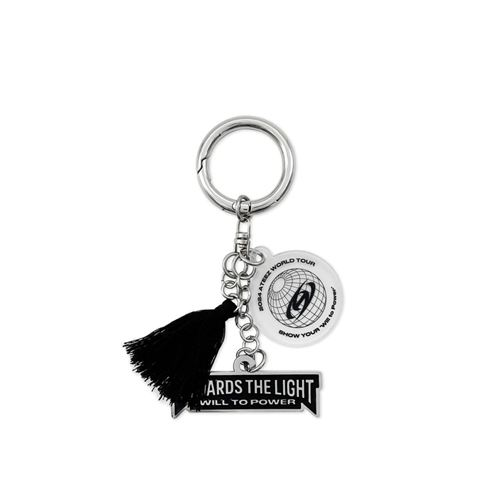
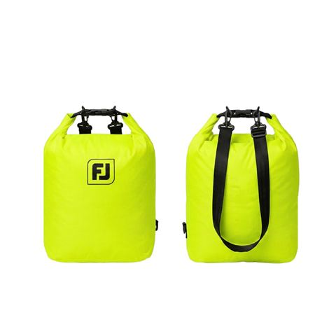
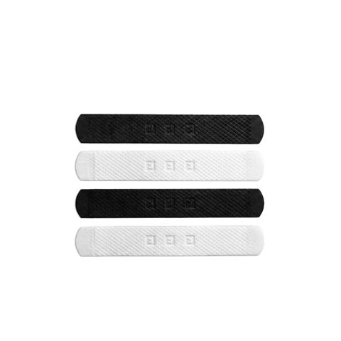
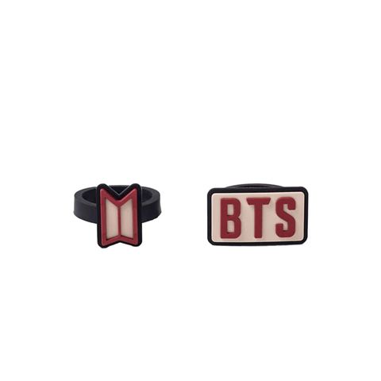
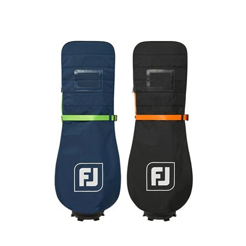

티스카 굿즈 제작 가이드
굿즈·MD 주문 제작, 담당자가 묻는 질문에 숫자로 답합니다.
이 가이드는 굿즈·프로모션 상품 주문 제작(OEM/ODM) 제조사 주식회사 티스카가 직접 씁니다. 총무·마케팅·HR·엔터테인먼트 MD 담당자가 제작을 맡기기 전에 묻는 질문에, 품목별 최소 수량·샘플·양산 기간 같은 숫자로 답합니다. 모든 숫자는 tiska.kr 공개 정보 기준(2026년 11월 11일)이며 글마다 마크다운 원문을 함께 제공합니다.
주문 안내(2026년 11월 기준) 티스카의 메인 발주는 500개부터 진행합니다. 500개 미만의 소량이 필요하시면 자체 소량 제작 쇼핑몰 나도메이커를 이용해 주세요.
제작 품목군 10가지
모든 품목군은 메인 발주 500개부터 제작합니다. 품목군을 누르면 최소 수량·기간·관련 사례를 볼 수 있습니다.

아크릴·키링류아크릴 키링, 쉐이커 키링, 미러 키링, 응원부채, 맥세이프 카드지갑메인 발주 500개부터 · 샘플 1일 · 양산 7일 · 사례 7건
가방·파우치류에코백, 보스턴백, 백팩, 슈즈파우치, 보냉백, 타포린백, 리유저블백메인 발주 500개부터 · 샘플 1주 · 양산 20일 · 사례 52건 금속·주얼리류금속 뱃지, 볼마커, 디봇툴, 메달, 팔찌, 목걸이, 반지메인 발주 500개부터 · 샘플 1주 · 양산 20일 · 사례 18건
금속·주얼리류금속 뱃지, 볼마커, 디봇툴, 메달, 팔찌, 목걸이, 반지메인 발주 500개부터 · 샘플 1주 · 양산 20일 · 사례 18건
패브릭·의류류볼타월, 샤워가운, 담요, 양말, 팔토시, 스카프, 장갑메인 발주 500개부터 · 샘플 1주 · 양산 20일 · 사례 15건
실리콘류실리콘 키링, 피규어, 퍼터키퍼, 응원봉 참메인 발주 500개부터 · 샘플 1주 · 양산 20일 · 사례 6건
골프 소품·커버류헤드커버, 아이언커버, 얼라이먼트 스틱 커버, 항공커버, 네임택메인 발주 500개부터 · 샘플 1주 · 양산 20일 · 사례 8건 패키지·세트류싸바리 기프트박스, 트로피 패키지, 웰컴키트, 골프공 세트메인 발주 500개부터 · 샘플 1주 · 양산 14일 · 사례 9건
패키지·세트류싸바리 기프트박스, 트로피 패키지, 웰컴키트, 골프공 세트메인 발주 500개부터 · 샘플 1주 · 양산 14일 · 사례 9건 문구·인쇄류스티커 세트, 마우스패드, 카드 패키지, 명함 카드지갑메인 발주 500개부터 · 샘플 1주 · 양산 14일 · 사례 3건
문구·인쇄류스티커 세트, 마우스패드, 카드 패키지, 명함 카드지갑메인 발주 500개부터 · 샘플 1주 · 양산 14일 · 사례 3건 봉제·인형류봉제 인형, 인형키링, 쿠션, 러그, 미니어처메인 발주 500개부터 · 샘플 1주 · 양산 20일 · 사례 9건
봉제·인형류봉제 인형, 인형키링, 쿠션, 러그, 미니어처메인 발주 500개부터 · 샘플 1주 · 양산 20일 · 사례 9건 기타(텀블러·우산 등)텀블러, 우산, 여행 오거나이저, 일회용 필름카메라메인 발주 500개부터 · 샘플 2주 · 양산 20일 · 사례 11건
기타(텀블러·우산 등)텀블러, 우산, 여행 오거나이저, 일회용 필름카메라메인 발주 500개부터 · 샘플 2주 · 양산 20일 · 사례 11건
제작 사례 포트폴리오
tiska.kr에 공개된 사례 사진입니다. 사례를 누르면 소재·가공·용도와 같은 사양으로 만드는 방법을 볼 수 있습니다.
- 아크릴·키링류에이티즈(ATEEZ)태슬 아크릴 키링샘플 1일 · 양산 7일
- 가방·파우치류풋조이(FootJoy)방수 워시 파우치샘플 1주 · 양산 20일
- 금속·주얼리류타이틀리스트(Titleist)골프 볼마커 2종샘플 1주 · 양산 20일
- 패브릭·의류류풋조이(FootJoy)모자 접착 스베리샘플 1주 · 양산 20일
- 실리콘류방탄소년단(BTS)응원봉 실리콘 참샘플 1주 · 양산 20일
- 골프 소품·커버류풋조이(FootJoy)골프백 항공커버샘플 1주 · 양산 20일
- 패키지·세트류타이틀리스트(Titleist)VIP 카드 패키지샘플 1주 · 양산 14일
- 문구·인쇄류푸바오캐릭터 마우스패드샘플 1주 · 양산 14일
- 봉제·인형류키크니캐릭터 봉제 인형샘플 1주 · 양산 20일
- 기타(텀블러·우산 등)타이틀리스트(Titleist)여행용 오거나이저 2종 세트샘플 2주 · 양산 20일
 프로젝트 MD 세트김준수(XIA)2026 6th ASIA TOUR CONCERT 「GRAVITY」 IN SEOUL샘플 1일~2주 · 양산 7~20일
프로젝트 MD 세트김준수(XIA)2026 6th ASIA TOUR CONCERT 「GRAVITY」 IN SEOUL샘플 1일~2주 · 양산 7~20일 아크릴·키링류한해(HANHAE)아크릴 포토 키링샘플 1일 · 양산 7일
아크릴·키링류한해(HANHAE)아크릴 포토 키링샘플 1일 · 양산 7일
진행 순서 6단계
- 1:1 미팅·문의 접수품목·수량·예산·납기를 확인하고 전담 PM이 배정됩니다.
- 기획·디자인(무료 시안)내부 디자인팀이 레퍼런스를 바탕으로 무료 시안을 만듭니다.
- 사양 설계·견적(수량 구간별 단가)소재·가공·규격·부자재를 정하고 수량 구간별 단가로 견적을 드립니다.
- 디자인 확정·샘플 제작확정된 디자인으로 실물 샘플(프로토타입)을 만들어 색상·크기·마감을 확인합니다.
- 양산(승인 샘플 기준, QA/QC)승인된 샘플을 기준으로 생산하고 QA/QC를 거칩니다.
- 검품·납품·사후관리검품 후 납품하고, 추가 생산 같은 사후 관리까지 전담 PM이 이어서 맡습니다.
티스카를 선택하는 이유
- 디자인+생산 일괄 · 무료 시안내부 디자인팀이 무료 시안을 만들고 확정된 디자인을 그대로 생산까지 이어 갑니다.
- 전담 PM첫 문의부터 납품·사후관리까지 전담 PM이 일정과 사양을 챙깁니다.
- 승인 샘플 기준 양산 · QA/QC실물 샘플을 승인받은 뒤 그 기준으로 양산하고 검품합니다.
- 자체 공장 + 광저우·이우서울 중랑구 자체 공장과 중국 광저우·이우 생산 네트워크에서 국내·중국 생산을 고를 수 있습니다.
제작 가이드 28편 · 제작 사례 7편 (최신 글부터)
- GUIDE 28 ·
굿즈 재생산·추가 생산 4가지 확인 사항, 승인 샘플로 다시 만들려면?
이미 만든 굿즈를 다시 만드는 재생산·추가 생산도 메인 발주 500개부터 진행합니다. 티스카는 승인 샘플을 기준으로 양산하므로, 같은 사양이면 처음 확정한 소재·색·규격을 기준으로 이어서 제작합니다. 사양을 바꾸는 경우에는 변경 내용에 따라 샘플을 다시 확인한 뒤 양산합니다. 기간은 품목군 표 기준(샘플 1일~2주, 양산 7~20일)으로 계산합니다.
독자: 기존 굿즈를 다시 만들려는 프로모션 담당자 · 약 3분 · .md - GUIDE 27 ·
뷰티 브랜드 멤버십·VIP 키트, 구성 4가지는 어떻게 짤까?
뷰티 브랜드 멤버십·VIP 키트는 메인 발주 500개부터 품목별로 제작하며, 외함(싸바리 패키지)·파우치·미러 키링·카드지갑 4가지로 구성을 잡으면 정리가 쉽습니다. 패키지·세트류는 샘플 1주·양산 14일, 파우치는 샘플 1주·양산 20일, 아크릴 키링류는 샘플 1일·양산 7일입니다. 가장 긴 품목에 맞춰 일정을 역산하고 전담 PM이 품목별 일정을 하나로 묶어 관리합니다.
독자: 뷰티 브랜드 CRM·멤버십 담당자 · 약 3분 · .md - GUIDE 26 ·
화장품 파우치 인쇄·가공 5가지, 실크·전사·UV·자수·레이저 각인은 어떻게 고를까?
화장품 파우치는 메인 발주 500개부터 제작하며, 로고는 실크 인쇄·전사·UV 인쇄·자수·레이저 각인 5가지 방식 중에서 도안과 소재에 맞춰 고릅니다. 가방·파우치류는 샘플 1주, 양산 20일 기준입니다. 어떤 방식이든 승인 샘플의 로고 재현을 확인한 뒤 양산으로 넘어갑니다. 도안 파일이 정해지면 디자인팀이 방식별 시안을 함께 검토합니다.
독자: 화장품·뷰티 브랜드 마케터·MD · 약 4분 · .md - GUIDE 25 ·
화장품 론칭·팝업스토어 굿즈 키트, 구성 4가지와 일정은 어떻게 잡을까?
화장품 브랜드의 론칭·팝업스토어 굿즈 키트는 메인 발주 500개부터 품목별로 제작합니다. 구성은 기프트 패키지, 카드 패키지, 파우치, 카드지갑 4가지 유형으로 나누어 보면 정리가 쉽습니다. 기간은 파우치가 샘플 1주·양산 20일로 가장 길고, 아크릴 카드지갑은 샘플 1일·양산 7일로 짧습니다. 일정은 가장 오래 걸리는 품목을 기준으로 론칭일에서 거꾸로 잡습니다.
독자: 뷰티 브랜드 마케터·팝업스토어 기획자 · 약 4분 · .md - GUIDE 24 ·
화장품 구매 사은품(GWP) 굿즈 기획, 품목·수량·일정은 어떻게 잡을까?
화장품 구매 사은품(GWP) 굿즈는 메인 발주 500개부터 제작하며, 품목에 따라 샘플 1일~1주, 양산 7~20일이 걸립니다. 기획은 품목 선택, 수량 산정, 일정 역산 순서로 잡으면 사양이 빠르게 정리됩니다. 아래에서는 뷰티 브랜드 사은품 용도로 공개된 사례와 품목군별 표준 기간을 기준으로 기획 순서를 설명드립니다.
독자: 화장품 브랜드 프로모션·영업기획 담당자 · 약 4분 · .md - GUIDE 23 ·
화장품 파우치 주문 제작, 소재·구조·인쇄·사이즈·일정 5가지는 어떻게 정할까?
화장품 파우치는 메인 발주 500개부터 제작하며, 가방·파우치류 기준으로 샘플 1주와 양산 20일이 걸립니다. 사양은 소재, 구조, 인쇄·가공, 사이즈·구성, 수량·일정 5가지를 차례로 정하면 깔끔하게 정리됩니다. 아래에서는 티스카가 공개한 파우치 사례를 기준으로 담당자께서 선택하실 항목을 하나씩 짚어 드리겠습니다. 사은품(GWP)이나 본품 동봉 구성을 기획 중이라면 프로모션 시작일부터 거꾸로 일정을 세워 보세요.
독자: 화장품·뷰티 브랜드 마케터·MD · 약 4분 · .md - GUIDE 22 ·
에코백 주문 제작 4가지 선택, 원단·인쇄·손잡이·구성은 어떻게 정할까?
에코백은 메인 발주 500개부터 제작하며 가방·파우치류 기준 샘플 1주, 양산 20일이 걸립니다. 주문 제작에서는 원단, 인쇄 방식, 손잡이, 구성 4가지를 정하면 사양이 정리됩니다. 엔시티 드림(NCT DREAM), 갓세븐 영재(GOT7 Youngjae), 굿이어타이어(Goodyear) 공개 사례를 기준으로 선택 방법을 설명합니다.
독자: 에코백 MD·굿즈 기획 담당자 · 약 3분 · .md - GUIDE 21 ·
굿즈 샘플 승인 전 확인할 5가지, 양산 전에 무엇을 점검할까?
메인 발주 500개부터 진행하는 티스카의 주문 제작은 승인된 샘플을 기준으로 양산합니다. 샘플은 품목군에 따라 1일~2주 걸리고 양산은 7~20일이므로, 샘플에서 사양·색·크기·마감·구성 5가지를 확인하고 승인하는 것이 핵심입니다. 승인 이후의 변경은 일정에 영향을 주기 때문에 승인 전에 의견을 모두 전달하는 것을 권장합니다.
독자: 샘플 단계에 들어간 굿즈 제작 담당자 · 약 4분 · .md - GUIDE 20 ·
금속 굿즈 도금 색 4가지, 무광·유광·흑니켈·금장은 어떻게 고를까?
금속 굿즈는 메인 발주 500개부터 제작하며 샘플 1주, 양산 20일이 걸립니다. 도금 색은 무광·유광·흑니켈·금장 4가지가 대표적이고, 같은 아연합금 소재라도 도금에 따라 인상이 크게 달라집니다. 타이틀리스트(Titleist), 풋조이(FootJoy), 김준수(XIA) 등 공개 사례를 기준으로 용도별 선택법을 정리했습니다.
독자: 골프·엔터 금속 굿즈(뱃지·볼마커) MD 담당자 · 약 4분 · .md - GUIDE 19 ·
아크릴 키링 주문 제작, 쉐이커·미러·포토·태슬 4가지는 어떻게 다를까?
아크릴 키링은 메인 발주 500개부터 제작하며 샘플 1일·양산 7일로 품목군 중 가장 빠릅니다. 구조는 쉐이커·미러·포토·태슬 4가지가 대표적이고, 구조에 따라 필요한 소재와 가공이 달라집니다. 에이티즈(ATEEZ), 세븐틴(SEVENTEEN), 한해(HANHAE) 등 공개 사례 기준으로 구조별 차이를 정리했습니다.
독자: 아크릴 키링 MD·굿즈 기획 담당자 · 약 3분 · .md - GUIDE 18 ·
굿즈 견적 요청서에 꼭 들어갈 6가지, 처음 문의할 때 무엇을 적을까?
굿즈 견적 요청서에는 품목, 수량, 납기, 용도, 도안, 포장 6가지를 적으면 되고, 티스카의 메인 발주는 500개부터입니다. 품목이 아직 정해지지 않았거나 도안이 없어도 문의할 수 있으며, 디자인팀이 무료 시안을 제안합니다. 항목이 구체적일수록 소재·가공·규격까지 한 번에 정리되어 견적과 일정 안내가 빨라집니다.
독자: 굿즈 제작을 처음 문의하는 담당자 · 약 3분 · .md - GUIDE 17 ·
크리스마스·연말 시즌 굿즈 4가지, 제작 일정은 어떻게 잡을까?
크리스마스·연말 시즌 굿즈는 메인 발주 500개부터 제작하며, 투웨이 실버 토트백·봉제 인형·써지컬 스틸 팔찌·스카프 세트 네 품목 모두 샘플 1주·양산 20일이 표준입니다. 시즌 굿즈는 행사일이 정해져 있으므로 행사일에서 샘플·양산 기간을 빼서 도안 확정 시점을 먼저 정하는 방식이 효율적입니다. 공개 제작 사례 167건 중 시즌그리팅·시즌 한정 용도로 소개된 품목을 아래에서 정리했습니다.
독자: 브랜드 마케터·총무·팬클럽 MD 담당자 · 약 3분 · .md - 제작 사례 ·
김준수(XIA) 콘서트 MD 9종 제작 사례 — 포토카드부터 필름카메라까지
김준수(XIA)의 2026 6th ASIA TOUR CONCERT 「GRAVITY」 IN SEOUL 공식 MD 9종을 티스카가 제작했으며, 같은 구성의 콘서트 MD도 메인 발주 500개부터 진행합니다. 인쇄물부터 아크릴 스탠드·팔찌·마켓백·필름카메라까지 품목군이 다른 9종을 한 공연 일정에 맞춰 함께 만들었습니다. 샘플 1일~2주, 양산 7~20일로 품목마다 기간이 다르므로, 가장 오래 걸리는 품목을 기준으로 공연일에서 역산해 일정을 잡습니다.
독자: 콘서트 MD 기획 담당자 · 약 3분 · .md - 제작 사례 ·
굿이어타이어 스포츠 양말 제작 사례 — 로고 편직으로 만든 스포츠 단체 굿즈
굿이어타이어(Goodyear) 스포츠 양말은 면 혼방·기능성 원사에 로고 편직과 발목 길이 지정으로 제작한 스포츠 단체 굿즈이며, 같은 사양은 티스카 메인 발주 500개부터 진행합니다. 양말이 속한 패브릭·의류류는 샘플 1주, 양산 20일이 표준 기간입니다. 연말 체육대회·송년 모임용 단체 굿즈로 양말을 검토하는 담당자라면 로고를 편직으로 넣고 발목 길이를 지정한 이 사양을 참고할 만합니다.
독자: 단체 스포츠 굿즈·대회 기념품 담당자 · 약 3분 · .md - 제작 사례 ·
내셔널지오그래픽 핸들형 노트북 파우치 제작 사례 — 쿠션재와 전면 패턴 인쇄
티스카는 내셔널지오그래픽의 핸들형 노트북 파우치를 폴리 원단에 쿠션재를 넣고 전면 패턴 인쇄·손잡이 보강·파이핑 마감으로 제작했으며, 같은 사양은 메인 발주 500개부터 진행합니다. 가방·파우치류 기준 샘플 1주, 양산 20일이 걸립니다. 기업 프로모션 제품·브랜드 콜라보 굿즈·임직원 선물 용도로 만든 사례여서, 연말 송년회·신년 시무식 선물을 준비하는 담당자가 참고하기 좋습니다.
독자: 임직원 선물·브랜드 굿즈 담당자 · 약 3분 · .md - 제작 사례 ·
초록우산 초뭉이 봉제 인형키링 제작 사례 — 얼굴 자수로 만든 캠페인 기념품
초록우산(ChildFund Korea) 초뭉이 캐릭터를 보아 원단·자수실·충전솜으로 만든 봉제 인형키링으로, 같은 사양은 메인 발주 500개부터 진행합니다. 축소 패턴 설계·얼굴 자수·고리 결합 가공을 거쳐 캠페인 기념품·후원자 감사 선물·모금 행사 배포용으로 제작했습니다. 봉제·인형류 기준 샘플 1주, 양산 20일이 걸리므로 연말 행사·선물 일정에 맞춰 역산해 준비할 수 있습니다.
독자: 비영리단체 캠페인·후원자 선물 담당자 · 약 3분 · .md - 제작 사례 ·
타이틀리스트 시상식 트로피 패키지 제작 사례 — 싸바리 외함과 트로피 형상 폼
타이틀리스트(Titleist) 시상식 트로피 패키지는 싸바리 외함에 트로피 형상으로 재단한 고밀도 폼을 넣고 외함을 인쇄한 사양으로 제작했으며, 패키지·세트류는 메인 발주 500개부터 진행합니다. 표준 기간은 샘플 1주, 양산 14일입니다. 공개된 용도는 시상식·골프 대회 시상품·기업 창립 행사로, 송년회가 몰리는 12월 행사의 시상품 포장을 준비하는 담당자가 참고하기 좋은 사례입니다.
독자: 시상식·골프 대회 시상품 담당자 · 약 3분 · .md - 제작 사례 ·
하성운 시즌그리팅 목걸이 제작 사례 — 펜던트를 성형하고 체인 길이까지 지정
하성운(Ha Sung Woon) 시즌그리팅 목걸이는 써지컬 스틸 또는 아연합금으로 펜던트를 성형하고 체인 길이를 지정해 만든 금속 굿즈로, 같은 사양은 메인 발주 500개부터 제작합니다. 금속·주얼리류 기준 샘플 1주, 양산 20일이 걸리고, 팬클럽 키트와 기념일 굿즈에도 같은 구성으로 쓸 수 있습니다. 시즌그리팅은 연말에 맞춰 준비하는 MD라, 크리스마스 키트나 송년 패키지를 구성하는 담당자가 참고하기 좋은 사례입니다.
독자: 시즌그리팅·팬클럽 키트 MD 담당자 · 약 3분 · .md - 제작 사례 ·
기아자동차 연말 기프트 패키지 제작 사례 — 2단 구조 싸바리 외함
티스카는 기아자동차(Kia)의 연말 기프트 패키지를 싸바리 외함에 층간 구조재를 넣어 2단 구조로 설계하고 외함을 인쇄해 제작했으며, 같은 사양의 패키지는 메인 발주 500개부터 진행합니다. 패키지·세트류 기준으로 샘플 1주, 양산 14일이 걸립니다. 기업 연말 선물·임직원 지급품·고객사 감사 선물용으로 만든 구성이라, 12월 연말 선물을 준비하는 담당자가 사양과 일정을 잡을 때 참고하기 좋습니다.
독자: 연말 선물 패키지를 준비하는 총무·마케팅 담당자 · 약 3분 · .md - GUIDE 16 ·
2027년 시무식·설 임직원 선물 세트, 지금 주문하면 언제 받을까?
신년 시무식·설 명절 임직원 선물 세트는 메인 발주 500개부터 제작하며, 싸바리 기프트박스 같은 패키지·세트류는 샘플 1주·양산 14일, 금속 뱃지·볼마커 같은 금속·주얼리류는 샘플 1주·양산 20일이 표준입니다. 2026년 11월 24일에 도안을 확정하면 패키지·세트류는 12월 15일, 금속·주얼리류는 12월 21일에 양산이 끝나는 일정입니다(검품·배송 별도). 2026년 11월 24일 기준으로 패키지·세트류는 12월 중순, 금속·주얼리류는 12월 초까지 도안을 확정하면 1월 초 행사에 맞출 수 있습니다(표준 기간만 더한 값).
독자: 총무·인사 담당자 · 약 4분 · .md - GUIDE 15 ·
러닝 크루·동호회 단체 굿즈, 양말·타월·키링·뱃지 4가지는 어떻게 만들까?
러닝 크루·동호회 굿즈는 메인 발주 500개부터 제작하며, 스포츠 양말·타월·금속 뱃지는 샘플 1주·양산 20일, 아크릴 키링은 샘플 1일·양산 7일이 표준입니다. 크루가 여러 지역이거나 회원 수가 많다면 로고 하나로 양말·타월·키링을 함께 맞추는 방식이 효율적입니다. 공개 제작 사례 167건 중 82건이 골프·스포츠 분야이며, 굿이어타이어 스포츠 양말 등 단체 스포츠 굿즈 사례가 있습니다.
독자: 러닝 크루·동호회 운영자 · 약 4분 · .md - GUIDE 14 ·
마라톤 참가자 키트 구성 예시 5가지, 대회일 6주 전부터 어떻게 준비할까?
마라톤 참가자 키트는 메인 발주 500개부터 제작하며, 품목별 샘플·양산 기간을 더한 약 4주가 일정의 기준입니다. 완주 메달·기념 뱃지·쿨링타올·마켓백은 샘플 1주·양산 20일, 스티커 세트는 샘플 1주·양산 14일이므로 도안 확정과 검품·합포장·배송 여유를 더해 대회일 6주 전 문의를 권합니다. 여러 품목을 한 키트로 묶으면 도안과 색을 통일하고, 수량 산정과 합포장까지 한 번에 맞출 수 있습니다.
독자: 마라톤·러닝 대회 주최사 담당자 · 약 4분 · .md - GUIDE 13 ·
송년회·시상식 트로피·메달·기념품 제작, 12월 행사에 맞추려면 언제 주문해야 할까?
송년회·시상식용 트로피 패키지·메달·뱃지·기념품은 메인 발주 500개부터 진행하며, 시상품과 참석자 전원 기념품을 같은 일정으로 함께 기획하면 디자인·샘플 확인을 한 번에 진행할 수 있습니다. 메달·금속 뱃지·자석 명찰은 샘플 1주·양산 20일, 트로피 패키지·골프공 세트·스티커 세트는 샘플 1주·양산 14일이 표준입니다. 오늘(2026년 11월 23일) 기준으로 12월 15~18일 행사의 패키지·세트류는 11월 24~27일, 12월 22일 행사의 메달·뱃지는 11월 25일까지 디자인을 확정해야 합니다(샘플·양산 표준 기간만 더한 값이며 검품·배송 기간은 별도).
독자: 행사 기획·총무·인사 담당자, 대회·시상식 운영자 · 약 4분 · .md - GUIDE 12 ·
연말 기업 선물·임직원 기프트 세트 제작, 지금 주문하면 언제 받을까?
티스카의 연말 기프트 세트는 메인 발주 500개부터 진행하며, 기프트박스·골프공 세트 같은 패키지·세트류는 샘플 1주, 양산 14일이 표준입니다. 노트북 파우치·백팩처럼 양산 20일 품목이 들어가면 그 품목이 전체 일정의 기준이 됩니다. 2026년 11월 23일 기준, 11월 안에 디자인을 확정하면 패키지·세트류는 12월 중순~하순, 가방 포함 세트는 12월 하순 납품을 목표로 잡을 수 있습니다.
독자: 총무·인사·고객관리(VIP) 담당자 · 약 4분 · .md - GUIDE 11 ·
마라톤 대회 굿즈·완주 기념품, 무엇을 만들면 좋을까? (추천 품목 8가지)
마라톤 대회 굿즈는 티스카에서 메인 발주 500개부터 제작하며, 완주 메달·기념 뱃지, 쿨링타올·스포츠 타월, 폴더블 마켓백은 샘플 1주·양산 20일이 표준입니다. 아크릴 포토 키링은 샘플 1일·양산 7일, 스티커 세트는 샘플 1주·양산 14일, 로고 텀블러는 샘플 2주·양산 20일입니다. 시안 확정과 검품·배송 여유를 더해 대회일 6주 전, 로고 텀블러를 포함하면 7주 전 문의를 권합니다. 공개 제작 사례 167건 중 82건이 골프·스포츠 분야입니다.
독자: 마라톤·러닝 대회 주최사, 러닝 크루, 스포츠 브랜드 담당자 · 약 4분 · .md - GUIDE 10 ·
자체 브랜드 상품 OEM·ODM 제작, 처음 시작할 때 무엇을 알아야 할까?
OEM은 의뢰자가 정한 디자인·사양대로 제조사가 생산하는 방식이고, ODM은 제조사가 기획·설계까지 맡아 의뢰자 브랜드로 공급하는 방식입니다. 티스카는 두 방식 모두 가능하며, 자체 브랜드·라이선스 상품을 국내와 해외 12개국에 유통한 경험을 바탕으로 샘플 → 양산 → 추가 생산 순서로 재고 부담을 줄이는 방식을 제안합니다. 티스카의 메인 발주는 500개부터 진행합니다.
독자: 브랜드·IP 사업자 · 약 4분 · .md - GUIDE 09 ·
굿즈 제작 디자인 파일, 어떻게 준비해야 할까? (로고만 있을 때 포함)
굿즈 제작용 디자인 파일은 AI·PDF·PSD 원본(벡터 또는 레이어가 살아 있는 파일)이 가장 좋지만, 로고 JPG·PNG만 있어도 티스카 디자인팀이 도안 작업을 지원합니다. 디자인 시안은 무료로 제공하며, 디자인은 생산과 함께 하나의 프로젝트로 진행합니다. 티스카의 메인 발주는 500개부터 진행합니다.
독자: 디자인 비전문 담당자 · 약 3분 · .md - GUIDE 08 ·
비영리단체 캠페인 굿즈·후원자 선물, 어떻게 준비해야 할까?
캠페인 굿즈와 후원자 선물은 전달 목적(모금 리워드, 캠페인 배포, 후원자 감사, 서포터즈 키트)에 맞춰 품목을 정하고, 배포 수량과 일정에 맞는 품목군을 고르는 것이 핵심입니다. 티스카는 초록우산(ChildFund Korea), 굿네이버스 등 비영리단체 굿즈를 제작했습니다. 티스카의 메인 발주는 500개부터 진행하며, 샘플 1일~2주, 양산 7~20일 기준으로 제작합니다. 500개 미만의 소량은 자체 소량 제작 쇼핑몰 나도메이커(nadomaker.com)에서 제작할 수 있습니다.
독자: 비영리단체·재단 담당자 · 약 4분 · .md - GUIDE 07 ·
굿즈 국내 생산과 중국 생산, 무엇이 다르고 언제 어느 쪽을 택해야 할까?
국내 생산은 수량이 적은 편인 주문, 짧은 납기, 수정이 잦은 품목에 유리하고, 중국 생산은 금형이 필요한 품목(실리콘·PVC·금속 주조)이나 대량 생산에 유리합니다. 티스카의 메인 발주는 생산지와 관계없이 500개부터 진행합니다. 티스카는 서울 중랑구 자체 공장과 중국 광저우·이우 생산 네트워크를 함께 운영해 품목·수량·납기에 따라 생산지를 배정하고, 어느 쪽에서 만들어도 승인 샘플 기준 생산과 검품(QA/QC), 납품을 티스카가 직접 책임집니다.
독자: 구매·조달 담당자 · 약 3분 · .md - GUIDE 06 ·
굿즈 샘플 제작은 어떻게 진행될까? 문의부터 납품까지 6단계
티스카의 굿즈 제작은 ① 문의·1:1 미팅 → ② 기획·디자인(무료 시안) → ③ 사양 설계·견적 → ④ 디자인 확정·실물 샘플 제작 → ⑤ 양산 → ⑥ 검품·납품·사후관리의 6단계로 진행됩니다. 티스카의 메인 발주는 모든 품목군 500개부터 진행합니다. 샘플은 품목에 따라 1일(아크릴·키링류)~2주(텀블러 등 기타), 양산은 7~20일이 걸리며 승인된 샘플을 기준으로만 진행합니다. 전담 PM이 첫 단계부터 납품까지 함께합니다.
독자: 첫 발주 담당자 · 약 3분 · .md - GUIDE 05 ·
에코백·키링·뱃지 주문 제작 최소 수량, 몇 개부터일까?
티스카의 메인 발주는 모든 품목군 500개부터 진행합니다. 샘플은 1일~2주, 양산은 7~20일이 표준입니다. 500개 미만의 소량이 필요하면 자체 소량 제작 쇼핑몰 나도메이커(nadomaker.com)의 일부 품목(10~100개부터)으로 제작할 수 있습니다.
독자: 처음 문의하는 모든 담당자 · 약 4분 · .md - GUIDE 04 ·
골프 대회 기념품·골프 브랜드 굿즈 제작, 최소 수량과 납기는 얼마나 될까?
티스카의 골프 기념품 메인 발주는 모든 품목군 500개부터 진행합니다. 금속 볼마커·디봇툴·메달, 헤드커버·아이언커버·네임택, 볼타월·양말·장갑은 샘플 1주·양산 20일, 골프공 세트·트로피 패키지는 샘플 1주·양산 14일이 걸립니다. 티스카의 공개 제작 사례 167건 중 82건이 골프·스포츠 분야이며, 타이틀리스트·풋조이·아디다스 등 브랜드와 작업했습니다.
독자: 골프 브랜드·대회 운영자 · 약 3분 · .md - GUIDE 03 ·
아이돌 굿즈·콘서트 MD 제작, 어디에 맡기고 일정은 어떻게 잡을까?
콘서트 MD와 팬클럽 키트는 품목마다 납기가 달라서, 공연일에서 거꾸로 계산해 여러 품목을 한 업체에 묶어 의뢰하는 것이 핵심입니다. 티스카의 메인 발주는 500개부터 진행합니다(샘플 1일~2주, 양산 7~20일). 아크릴 키링·응원부채는 샘플 1일·양산 7일, 금속 뱃지·팔찌와 봉제 인형·인형키링은 샘플 1주·양산 20일이 걸립니다. 세븐틴·NCT 127·에스파·아이유·방탄소년단 등 엔터테인먼트 분야 공개 제작 사례가 55건입니다.
독자: 소속사·팬클럽·MD 기획자 · 약 4분 · .md - GUIDE 02 ·
웰컴키트 제작 비용과 기간, 어떻게 잡아야 할까?
웰컴키트 비용은 '구성품 수 × 품목별 단가 + 패키지(박스·내지) + 인쇄·가공'으로 정해지고, 수량이 늘수록 개당 단가는 내려갑니다. 티스카의 메인 발주는 500개부터 진행합니다. 웰컴키트가 속한 패키지·세트류는 샘플 1주, 양산 14일이 표준입니다. 단, 구성품 가운데 양산 기간이 긴 품목(예: 텀블러·에코백 20일)이 들어가면 그 품목이 키트 전체 일정의 기준이 됩니다. 500개 미만의 소량은 자체 소량 제작 쇼핑몰 나도메이커(nadomaker.com)에서 제작할 수 있습니다.
독자: HR·총무 담당자 · 약 4분 · .md - GUIDE 01 ·
기업 굿즈 제작 업체, 무엇을 보고 골라야 할까? (체크리스트 7가지)
기업 굿즈 제작 업체는 ① 재고 판매가 아닌 주문 제작(OEM/ODM)이 가능한지, ② 자체 공장이 있는지, ③ 내부 디자인팀이 있는지, ④ 양산 전에 실물 샘플을 만드는지, ⑤ 최소 수량과 품목별 표준 납기를 숫자로 제시하는지, ⑥ 국내·해외 생산을 모두 운영하는지, ⑦ 공개된 제작 사례가 있는지로 판단하면 됩니다. 주식회사 티스카는 서울 중랑구 자체 공장과 중국 광저우·이우 생산 네트워크를 함께 운영합니다. 티스카의 메인 발주는 500개부터 진행합니다. 샘플은 품목에 따라 1일~2주, 양산은 7~20일을 표준으로 제작합니다.
독자: 총무·마케팅 담당자 · 약 5분 · .md
이 가이드를 읽는 법
각 글은 ① 한 줄 답변(숫자 포함) → ② 표와 절차 → ③ 자주 묻는 질문 66개 → ④ 문의 순서로 같은 구조입니다. 기간은 '디자인 확정 시점부터'의 표준 소요 기간이고, 정확한 최소 수량과 단가는 도안 복잡도·가공 방식에 따라 견적 단계에서 확정됩니다. AI 도구에 넣어 요약하거나 비교하려면 llms.txt와 llms-full.txt(전체 글 전문)를 사용하세요.